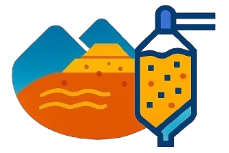
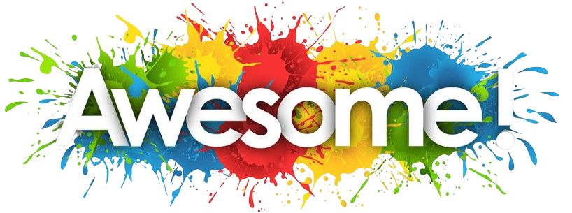
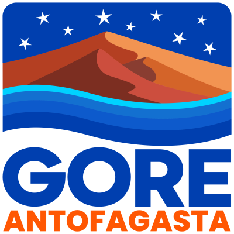
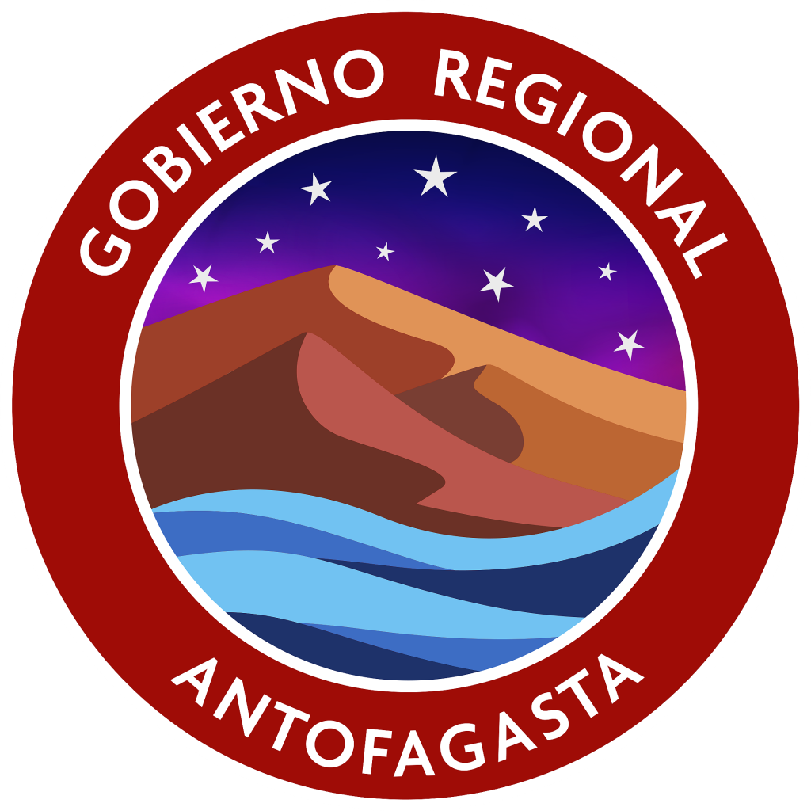

 
Inicio
Presentación del Observatorio
Últimas Noticias
Acceso a Cursos
Accesibilidad
Objetivos
Noticias
Buscar
Proyecto Observatorio Regional de Relaves Mineros
Financiado por el Gobierno Regional de Antofagasta durante el segundo semestre del año 2025 en la Región de Antofagasta, Chile
 